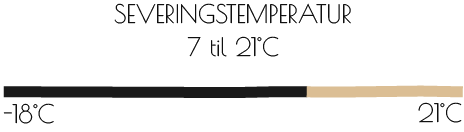
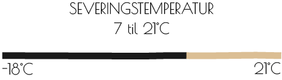

Haps haps se lige vores nye snaps. Lækkerbisken indeholder en
dejlig smag af solmodne røde kirsekbær, som bringer sommer, sol og
stemning til din gane. Kirstens`bær snaps har en stærk appel til
begge køn, for med den, er man altid i godt selskab og højt humør.
Den komplekst og raffinerede smag, stammer fra bær doneret fra
ejne og lokalbefolkningens haver. Men bare rolig du få ikke en på
bæret af Kirsten, selvom den indholder nogen af hendes
Kirsten´sbær. Høhøhø

 

Vi anbefaler
Kirstens`bær er skabt til det gode selskab og de gode stunder, hvor søde sager er tilsted. Snapsen er det perfekt match til desserter, da den med sin sødlige smag perfekt og diskret komplettere de søde sager. Men du kan uden tvivl, sige haps haps til den, hvis du bare føler for en lille lækker en.
Lækkerbiskner med denne lækkerbisken
Snapsen egner sig suverænt til søde sager, og den er mindst lige
så god i en dessert. Vi hos Far`s snaps kan varmt anbefal snapsen
til fremstilling af hjemmelavet fyldte chokolader. Med snapsen kan
du, let selv lave udsøgt lækkerbiskner, og nyde den sødlig og
kompleks smag på en helt ny måde.

Haps haps hvordan brygges Fars`s snaps
Den hjemmebryggede snaps har i generationer, skabt stemning, hygge og glæde til vores familie. En glæde vi ønsker at dele med alt og alle. Far`s snaps er et familieejet bryggeri, som brygger kvalitet snaps, med råvare fra egen have og lokalområdets skattekammer. Her får du et smugkig, på vores produktion og den snaps vi alle sener siger haps haps til.


First slide label
Some representative placeholder content for the first slide.

Second slide label
Some representative placeholder content for the second slide.

Third slide label
Some representative placeholder content for the third slide.

Third slide label
Some representative placeholder content for the third slide.

Third slide label
Some representative placeholder content for the third slide.